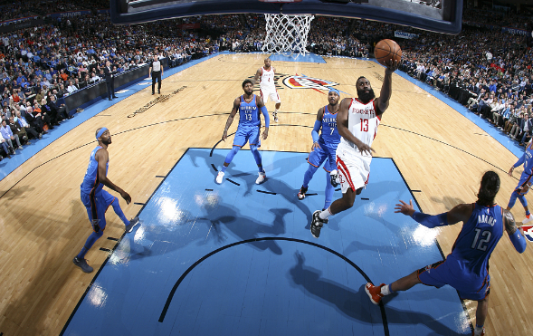
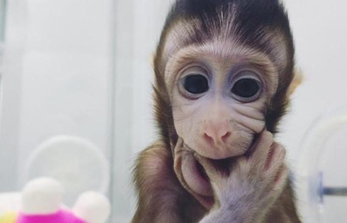
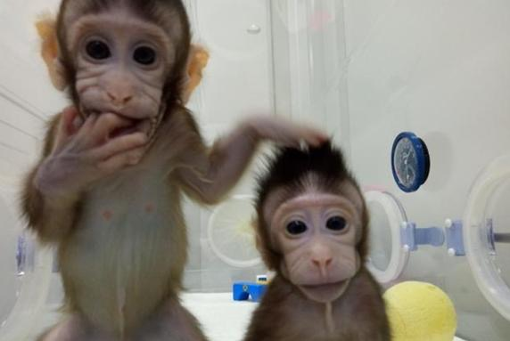
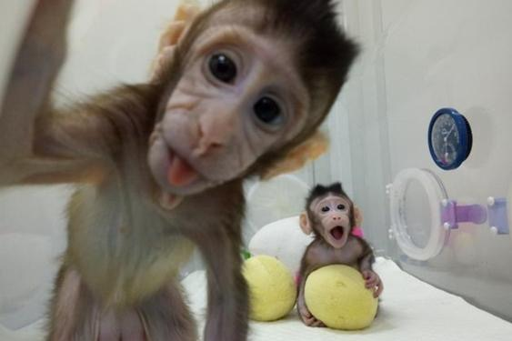

<!DOCTYPE html>
<html>

	<head>
		<meta charset="utf-8">
		<title>Hello MUI</title>
		<meta name="viewport" content="width=device-width, initial-scale=1,maximum-scale=1,user-scalable=no">
		<meta name="apple-mobile-web-app-capable" content="yes">
		<meta name="apple-mobile-web-app-status-bar-style" content="black">

		<link rel="stylesheet" href="../../css/mui.min.css">
		<style type="text/css">
			* {
				font-family: "黑体";
				color: rgb(56, 56, 56);
			}
			ul
			{
				padding-top: 0.2rem;
			}
			ul li {
				border-bottom: solid 0.01rem rgb(193, 193, 193);
			}
			
			.mui-content {
				background-color: rgb(255, 255, 255);
			}
			
			.mui-icon
			/*刷新箭头样式*/
			
			{
				font-size: 0.7rem;
				color: rgb(153, 153, 153);
			}
			
			.mui-pull {
				position: relative;
				top: 0.35rem;
				font-weight: 400;
			}
			
			.mui-pull-caption
			/*刷新文字样式*/
			
			{
				font-size: 0.45rem;
				color: rgb(153, 153, 153);
				line-height: 0.69rem;
			}
			
			.mui-table-view:before {
				background: white;
			}
			
			.mui-table-view:after {
				background: white;
			}
			
			.mui-pull-bottom-pocket,
			.mui-pull-top-pocket {
				height: 1.5625rem!important;
			}
			
			.content-cell .text {
				display: inline-block;
				width:6.0rem;
				font-size: 0.52rem;
				line-height: 0.7rem;
				padding-left:0.3rem;
				position: relative;top:-0.75rem;
			}
			
			.content-cell .info {
				padding-left:0.31rem;
				position: relative;top: -0.2rem;
				font-family: Bahnschrift SemiBold;
			}
			
			.content-cell .info span {
				display: inline-block;
				font-size:0.4rem;
				color: rgb(193, 193, 193);
				padding-right:0.2rem;
			}
			
			.content-cell a .img {
				display: inline-block;
				width:3.4rem;
				height:2.5rem;
				position: relative;right: -0.3rem;bottom: -0.4rem;
			}
			
			.content-cell #del {
				font-size: 0.6rem;
				color: rgb(193, 193, 193);
				position: relative;top:-0.38rem;left:4.86rem;
			}
		</style>
	</head>

	<body>
		<!--下拉刷新容器-->
		<div id="pullrefresh" class="mui-content mui-scroll-wrapper">
			<div class="mui-scroll">
				<!--数据列表-->
				<ul class="mui-table-view mui-table-view-chevron">
					<li class="content-cell">
						<!--<a href="../detail/nav.html">
							<span id="text" class="text"><font>火箭击败雷霆获16连胜 哈登23分11助保罗25分</font></span>
							<span></span>
							<div id="info" class="info"><span>NBA中国网</span><span>刚刚</span><span>1.4万跟帖</span><div id="del">×</div></div>
						</a>-->
					</li>
				</ul>
			</div>
		</div>
		<script src="../../js/mui.min.js"></script>
		<script type="text/javascript" src="../../js/zishiying.js"></script>
		<script>
			var pagenumber=0;
			var clientWidth = document.documentElement.clientWidth;
			var pulldownHeight = clientWidth / 10 * 0.90625;
			mui.init({
				pullRefresh: {
					container: '#pullrefresh',
					down: {
						auto: true,
						height: pulldownHeight,
						contentdown: '青春校园',
						contentover: '放开刷新',
						contentrefresh: '正在努力刷新...',
						callback: pulldownRefresh
					},
					up: {
						contentrefresh: '正在努力加载...',
						callback: pullupRefresh
					}
				}
			});
			
			mui.plusReady(function(){
				mui('.mui-scroll').on('tap', 'a', function() {
					var href = this.getAttribute('href');
					var article_id=this.getAttribute('data-id');
					mui.openWindow({
					    url:href,
					    id:href, 
					    styles:{
					      top:'0px',//新页面顶部位置
					      bottom:'0px',//新页面底部位置
					      width:'100%',//新页面宽度，默认为100% 
					      height:'100%'//新页面高度，默认为100% 
					    },
					    extras:{
					    	article_id:article_id
					    },
					    createNew:false,//是否重复创建同样id的webview，默认为false:不重复创建，直接显示
					    show:{
					      autoShow:true,//页面loaded事件发生后自动显示，默认为true
					      aniShow:'slide-in-right',//页面显示动画，默认为”slide-in-right“；
					      duration:400//页面动画持续时间，Android平台默认100毫秒，iOS平台默认200毫秒；
					    },
					    waiting:{
					      autoShow:false,//自动显示等待框，默认为true
					      title:false,//等待对话框上显示的提示内容
					      options:{
					        width:'50px',//等待框背景区域宽度，默认根据内容自动计算合适宽度
					        height:'50px',//等待框背景区域高度，默认根据内容自动计算合适高度
				      		}
				   		}
					})
				});
			    
			  	/*页面竖直回弹*/
				document.addEventListener("plusready",function(){
				var curWebview=plus.webview.currentWebview();
				curWebview.setStyle({bounce:"vertical"});
				},false);
			});
			/*
			 * 下拉刷新具体业务实现
			 */
			function pulldownRefresh() {
				var res, type;
				mui.ajax('http://125.90.88.9/ios/index.php', {
					data: {
						type: 'initialize',
						pagenumber:pagenumber
					},
					crossDomain: true,
					dataType: 'json', //服务器返回数据格式
					type: 'get', //HTTP请求类型
					success: function(data) {
						console.log(data[0]);
						pagenumber++;
						if(typeof data == 'string') {
							res = JSON.parse(data);
						} else {
							res = data;
						}
						var table = document.body.querySelector('.mui-table-view');
						var cells = document.body.querySelectorAll('.content-cell');
						var img='';
						for(var i = 0; i < res.length; i++) {
							console.log(res[i].title);
							var li = document.createElement('li');
							li.className = 'content-cell';
							if(res[i].litpic=='https://125.90.88.9')
							{
								img='../../imgs/defaultpic.png';
							}
							else
							{
								img=res[i].litpic;
							}
							li.innerHTML = "<a href='../detail/details.html' data-id='"+res[i].id+"'><span id='text' class='text'><font>"+res[i].title+"</font></span><span></span><div id='info' class='info'><span>"+res[i].writer+"</span><span>"+res[i].sortrank+"</span><span>"+res[i].click+"跟帖</span><div id='del'>×</div></div></a>";
							table.insertBefore(li, table.firstChild);
						}
							mui('#pullrefresh').pullRefresh().endPulldownToRefresh(); //refresh completed
							if(pagenumber!==1)
							mui.toast('更新了10条信息');
					},
					error: function(xhr, type, errorThrown) {
						//异常处理；
						mui('#pullrefresh').pullRefresh().endPulldownToRefresh();
						mui.toast('网络不通顺，请再次刷新');
					}
				});
			}
			var count = 0;
			/**
			 * 上拉加载具体业务实现
			 */
			function pullupRefresh() {
				setTimeout(function() {
					mui('#pullrefresh').pullRefresh().endPullupToRefresh((++count > 2)); //参数为true代表没有更多数据了。
					var table = document.body.querySelector('.mui-table-view');
					var cells = document.body.querySelectorAll('.content-cell');
					for(var i = cells.length, len = i + 1; i < len; i++) {
						var li = document.createElement('li');
						li.className = 'content-cell';
						li.innerHTML = '<a href="#"><span class="content-cell-title">人类首次克隆出猴子，而且还是由中国的科学家完成的。</span><span class="content-cell-middle"></span><span class="content-cell-foot"><p>悟空问答</p><p>212评论</p><p>21分钟前</p></span></a>';
						table.appendChild(li);
					}
				}, 1500);
			}
			//			if (mui.os.plus) {
			//				mui.plusReady(function() {
			//					setTimeout(function() {
			//						mui('#pullrefresh').pullRefresh().pullupLoading();
			//					}, 10);
			//
			//				});
			//			} else {
			//				mui.ready(function() {
			//					mui('#pullrefresh').pullRefresh().pullupLoading();
			//				});
			//			}
		</script>
	</body>

</html>